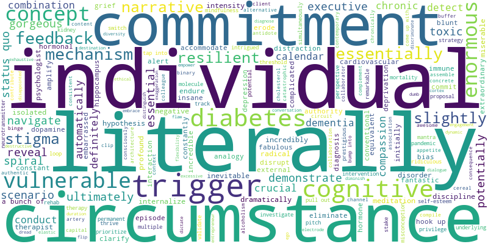

🌱使用说明
HOME
链接lalayouyi.github.io博客主页
SEARCH
100篇TED涉及到的单词列表，搜索框输入待查询单词或词根，列表返回对应单词及其TED来源。点击列表内的单词，可查看单词详情。
STUDY
单篇TED单词学习。多选框可选择TED类别。点击左侧对应TED标题，右侧返回该篇TED对应的单词列表。点击单词，可查看详情。
点击✔️，对应单词标绿表明已学会；点击❌，对应单词标红表明不熟悉。
TED相关资源领取
公众号拾光数据，后台输入TED，领取100篇TED的PDF + 音频 + 视频合集、可导入不背单词的100篇TED自定义词表及词表导入方法说明。
小红书笔记
MYTED打卡号和小红书笔记全对应，可在小红书上（小红书号3884751039，ID名：右一同学）查找对应打卡号的TED批注笔记，每篇TED笔记包含PDF原文、单词注解、音频及精华提炼）。
链接lalayouyi.github.io博客主页
SEARCH
100篇TED涉及到的单词列表，搜索框输入待查询单词或词根，列表返回对应单词及其TED来源。点击列表内的单词，可查看单词详情。
STUDY
单篇TED单词学习。多选框可选择TED类别。点击左侧对应TED标题，右侧返回该篇TED对应的单词列表。点击单词，可查看详情。
点击✔️，对应单词标绿表明已学会；点击❌，对应单词标红表明不熟悉。
TED相关资源领取
公众号拾光数据，后台输入TED，领取100篇TED的PDF + 音频 + 视频合集、可导入不背单词的100篇TED自定义词表及词表导入方法说明。
小红书笔记
MYTED打卡号和小红书笔记全对应，可在小红书上（小红书号3884751039，ID名：右一同学）查找对应打卡号的TED批注笔记，每篇TED笔记包含PDF原文、单词注解、音频及精华提炼）。
🌱单词统计
单词们的词频词云
电脑端点击可查看大图。

🌱学习进程
2024.3.1——START！在小红书【右一同学】上发布第一篇TED阅读打卡笔记。
2024.3.21——搭建第一版MYTED，提供基本的统计和词汇查询功能。
2024.4.18——MYTED迁移至基于Hexo的个人博客，实现自定义线上部署。
2024.5.5——完成第二版MYTED的修改，进度可视化拉满成就感。
2024.5.27——引入公众号【拾光数据】，通过后台关键字【TED】分享资源。
2024.6.7——TED阅读打卡100天结束，MYTED更新，添加燃尽图，调整iframe尺寸，解决列表遮挡问题，并导出适配不背单词的txt词表。
2024.11.4——MYTED整体重构。
2024.3.21——搭建第一版MYTED，提供基本的统计和词汇查询功能。
2024.4.18——MYTED迁移至基于Hexo的个人博客，实现自定义线上部署。
2024.5.5——完成第二版MYTED的修改，进度可视化拉满成就感。
2024.5.27——引入公众号【拾光数据】，通过后台关键字【TED】分享资源。
2024.6.7——TED阅读打卡100天结束，MYTED更新，添加燃尽图，调整iframe尺寸，解决列表遮挡问题，并导出适配不背单词的txt词表。
2024.11.4——MYTED整体重构。
TED学习进度与单词增长统计图
蓝色折线展示单词总数随TED阅读篇数增加的累计增长。
黄色折线记录每篇TED对应的新增单词数。
特殊点说明
第78篇和第100篇分别与74篇和24篇重复！
TED100篇打卡燃尽图
燃尽图用于追踪TED100天打卡挑战的进度。
两条曲线分别代表预计剩余和实际剩余的阅读篇数。
粉色散点展示当天阅读篇数。